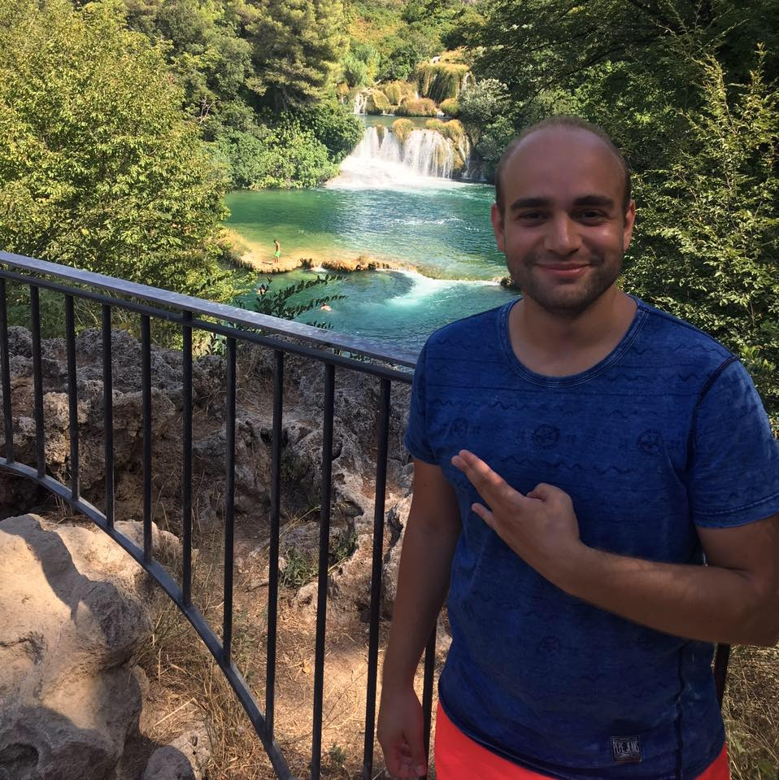
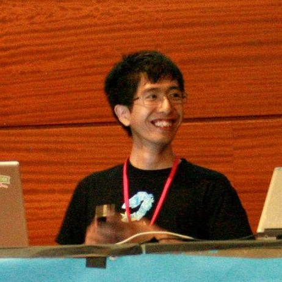
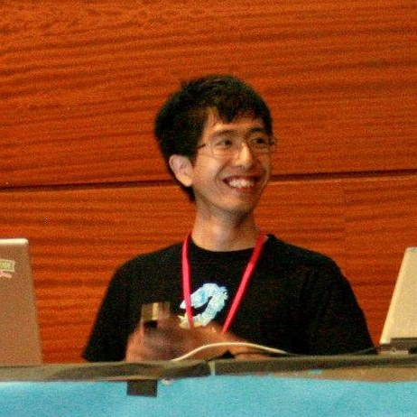

About
Digital cameras, ubiquitously present in the form of webcams, cell phones, and professional cameras, have provided enormous streams of data and means for communication and interaction. In this course, image understanding is addressed with the focus on core vision tasks of scene understanding and object recognition.
A broad range of techniques are studied on how computers can understand the visual world of humans including image formation and filtering, features (color and shape invariants, interest point detectors, descriptors, SIFT, HoG), visual information representation (vector space, statistical models, bag-of-words), learning and classification (nearest neighbor, kernel density estimation, SVM), dimension reduction (PCA, LDA and SVD), object detection and classification, object tracking (mean-shift, Kalman), and user interaction (active learning).
The class is taught by Professor Theo Gevers and Assistant Professor Thomas Mensink. The teaching assistant team includes Anil Baslamisli, Hoang-An Le, Hanan ElNaghy, Berkay Kicanaoglu, Minh Ngo, William Thong, Mert Kilickaya, and Jiaojiao Zhao.
Instructors
Teaching Assistants
 

Schedule
Following is the tentative schedule and some practical information. Please keep an eye on Datanose, Backboard, and Piazza for up-to-date changes.
Lecture 1: Introduction
SP C0.05 | 5pm-7pm | February 06, 2018
Warm-up: MATLAB tutorial
5pm-7pm | February 08, 2018
Lecture 2: Image Formation
SP C0.05 | 5pm-7pm | February 13, 2018
Exercise 1
CWI Turingzaal | 3pm-5pm | February 14, 2018
Lab1: Photometric stereo and Color
5pm-7pm | February 15, 2018
Lecture 3: Color and Image Processing
SP C0.05 | 5pm-7pm | February 20, 2018
Exercise 2
CWI Turingzaal | 3pm-5pm | February 21, 2018
Lab2: Neighborhood processing: Gabor and Gaussian Filters
5pm-7pm | February 22, 2018
Lecture 4: Features, Detections, Motions and Classification
SP C0.05 | 5pm-7pm | February 27, 2018
Lab3: Optical flow and Harris corner detector
5pm-7pm | March 01, 2018
Lecture 5: Object recognition: BoW and ConvNet
SP C0.05 | 5pm-7pm | March 06, 2018
Exercise 3
CWI Turingzaal | 3pm-5pm | March 07, 2018
Lab4: Image alignment and stitching
5pm-7pm | March 08, 2018
Lecture 6: Object detection, stereo and 3D reconstruction
SP C0.05 | 5pm-7pm | March 13, 2018
Exercise 4
CWI Turingzaal | 3pm-5pm | March 14, 2018
Project: Building an object classification system
5pm-7pm | March 15, 2018
Lecture 7: Application
SP C0.05 | 5pm-7pm | March 20, 2018
Project: Building an object classification system
5pm-7pm | March 22, 2018
Contact
The good place to ask question is Piazza
-
Address
Informatics Institute,
Faculty of Science, University of Amsterdam
Science Park 904, Amsterdam 1098XH, the Netherlands -
Email
computervision1 DOT uva AT gmail DOT com